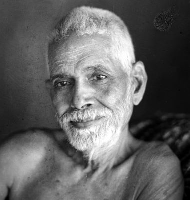

RAMANA MAHARSHI
Ramana Maharshi was an Indian Hindu sage . He was born Venkataraman Iyer but is mostly known by the name Bhagavan Sri Ramana Maharshi. He was born in Tiruchuli, Tamil Nadu, India. at the age of 16, he had a "death-experience" where he became aware of a "force" which he recognized as his true "I" or "self", and which he later identified with "the personal God, or Iswara", that is, Shiva. Since the 1930s his teachings have been popularized in the West.
